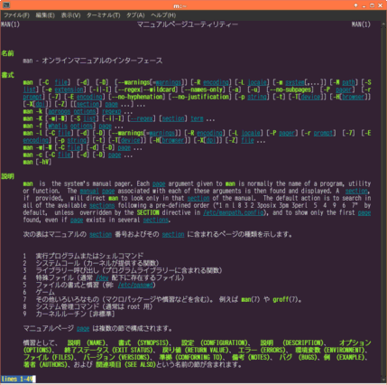

〜2014年1月上旬〜
~/.irbrcに require 'irb/completion' と書いておけば補完できるが、
候補が複数ある場合はタブを2回押さないといけない。たとえば
% irb irb(main):001:0> "hoge".u<TAB><TAB> "hoge".unpack "hoge".untrust "hoge".upcase "hoge".upto "hoge".untaint "hoge".untrusted? "hoge".upcase! irb(main):001:0>
とこんな感じに。これを1回のタブを押すだけで候補を出すようにするには~/.inpurcに
set show-all-if-ambiguous on
と書いておけばいい。
ただinputrcなのでこのままではreadlineを使ってるソフトは全部そのような挙動になる。
bashとかgdbとか。Rubyの中だけで有効にするには~/.inpurcで
$if Ruby set show-all-if-ambiguous on $endif
のように条件を指定する。アプリケーション毎にBash, Gdbのような名前が設定されている。
ahoってコマンドがあるとかないとか聞いて探したらなかったけど、ahaなんてコマンドが見つかった。
man見たらこれは面白い。エスケープシーケンスの色付きテキストをHTMLへ変換してくれるらしい。
さっそく先日のクリスマスツリーでやってみる。
% bash xmas.sh | aha -n > xmas.html
HTMLを表示するとこんな感じ。
★
／＼
／ &＼
／⁂ @ ＼
／⸮ ⸮｡⸛i＼
／@ ｡ ⁂＼
／ ＼
／⸮⸮ & @&⁂ ＼
／ & ⁂ ＼
／⸛ &⁂ ⸮ ⸛ ＼
／ ⁂@ & &⁂i &@｡＼
／ ii i@⁂⸮⁂& ⁂ ｡⁂ @＼
／ ｡ ⁂ ｡⁂｡ ⸛⁂⸮⁂ ⸮⸛ ＼
／ ⸛i @ ⸮@⁂ ⸮ ｡ ⁂＼
／｡⸛ i & ⸛ i ⸛&i ⸮&& i｡ ⸛＼
／⁂i⁂⁂&&i⁂ ⸛ ｡ ｡ ⁂ ⸛＼
／ ⁂ i @ ｡ ｡ @ &＼
／ ⸛ &⸛ @｡ ｡ ⸮ & ｡@ @ ⸮i& ⁂ ＼
／&｡ ⸛ ⸮ @ ｡ ⁂ ｡⸮ &⸛⸮ i ⁂ ＼
／@ ⸮& i ⸛ ⸛ & ⁂ @ ｡ ＼
／& ⁂@ ⁂ ⸮@ @⸮ ⁂ ｡ ⸮&⁂⸮ ｡ ⸮ ⸮ ＼
^^^^^^^^^^^^^^^^^^^| |^^^^^^^^^^^^^^^^^^^
| |
結構やるね。
そうなるとchromeの終了もなかなか終わらず数分ぐらいプロセスと残ってしまう。
たぶん拡張のどれかが原因だと思い、まずはセーフモードでと
% google-chrome --disable-extensions
で起動してみたら重くならなかった。やはり拡張が原因か。
とりあえずほとんどの拡張を無効にして、
1個ずつ適当なタイミングで有効にしているわけだけど、
これが結構時間がかかるので、なかなか該当する拡張にぶち当たらない。
まあ気長に。
ぐぐってたら
Linux / Unix: Colored Man Pages With less Commandてなページを見つけた。
ちょっといじって、こんな感じで設定してみた。
man() {
LESS_TERMCAP_mb=$'\e[1;31m' \
LESS_TERMCAP_md=$'\e[1;32m' \
LESS_TERMCAP_me=$'\e[0m' \
LESS_TERMCAP_se=$'\e[0m' \
LESS_TERMCAP_so=$'\e[1;44;33m' \
LESS_TERMCAP_ue=$'\e[0m' \
LESS_TERMCAP_us=$'\e[4;36m' \
command man "$@"
}

意外に使われてる色が少ない。
緑と水色しか出てこないってことはmanで使われてるのはmdとusだけか。
GNU coreutils 8.21からnumfmtという便利なコマンドが追加されている。
最近は-h(--human-readable)オプションが使えるコマンドが増えてるが、
すでに数値になっちゃってるものはもうどうしようもない。
そこでnumfmtだ。
% echo 123456789 | numfmt --to=iec 118M % echo 123456789 | numfmt --grouping 123,456,789
のように変換できる。便利すぎる。
ただUbuntu 13.10ではまだ8.20なので使えない。
しかたないのでnumfmtと
seqは自分でmakeして使ってる。
まだわからんが、なかなか特定が難しい。
しかしこれをやめられるかどうか。
userscriptを拡張にしちゃう手もあるか。
いつもPocketではqueue形式じゃなくてlist形式で使ってんだけど、
いつの間にかqueue形式になってることがあって変だなと思ったら、
キーボードショートカットにCTRL+1とかが加わっていた。
ChromeでCTRL+1はタブの1番目という感じに設定しているので、
CTRL+1を押せばタブの1番目に移動するが、
裏ではqueue形式(機能的にはHome)へ移動していたらしい。
見えないから何がどうなってるのかしばらくわからなかったよ。
外してみると何に使っていたかわからないくらいであった。
どうしても必要なuserscriptってのに今後気づいたら対処しよう。
ちょっと驚いた。bashで何げなく
$ ls file:///ho<TAB> $ ls file:///home/
とタブ押したら補完された！
file:をちゃんと認識してるかと思ったが、foo:でもいけてしまった。
つまりfile://のあたりは無視されているだけだった。
まあ、その適当さのおかげで便利になっているようで。
zshではそんな挙動にはならないので、自分でなんか書かないとできないんだろう。
Freecodeでは2.16となってるが、実際は
2.15からの機能。
単に2.15を飛ばしちゃったからだと思われる。
Release Notes:
"grep -P" can now use a just-in-time compiler to greatly speed up
matches, assuming proper support from PCRE. Several multi-byte issues
where resolved. Handling of very long lines on systems with a deficient
read system call was improved.
結構-Pを多用するのでうれしい機能だ。